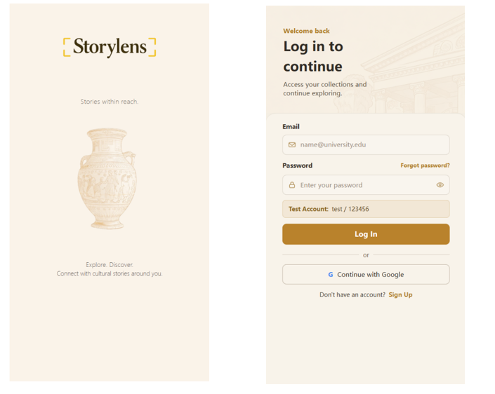
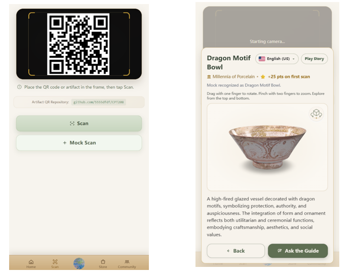

Minghao Lin
Student ID: 2361282
Frontend Lead Developer + State Management.
Vue3 + Vite setup, core pages development, QR scanning, 3D rendering and global state management.An AI-Powered Personalized Museum Companion
StoryLens is a mobile-based interactive concept that transforms traditional museum visits into an engaging, story-driven journey. Inspired by Pokemon GO and Duolingo, the system encourages visitors to explore exhibitions, unlock artifact stories, collect digital items, and stay motivated through points and missions.
Student ID: 2361282
Frontend Lead Developer + State Management.
Vue3 + Vite setup, core pages development, QR scanning, 3D rendering and global state management.
Student ID: 2361320
Testing + Deployment + Documentation.
Frontend-backend debugging, functional testing, deployment management and documentation preparation.
Student ID: 2362441
Frontend Page Developer + Styling / UI.
Business pages development, UI design, shopping cart/points features and mobile optimization.
Student ID: 2361143
Backend Developer + AI Services + Content.
Express backend setup, API development, AI services integration and knowledge base management.This timeline shows how StoryLens evolved from an initial museum experience problem into a high-fidelity interactive system. Each stage informed the next: research findings shaped the requirements, requirements guided the design goals, design goals led to three core system features, and usability testing helped us refine the final prototype.
| Week | Project Progress | Output |
|---|---|---|
| Week 2 | Group A3-3 formed; museum experience selected as the design context. | Topic confirmed; GitHub portfolio initialized. |
| Week 4 | User research conducted through background research, personas, and journey mapping. | Pain points identified: unclear routes, fragmented labels, limited engagement. |
| Week 6 | Requirements and design alternatives developed; hybrid AI-supported exploration chosen. | Mid-term poster draft; low-fi prototype; design direction confirmed. |
| Week 8 | High-fi prototype and alpha system developed around three core features. | AI route recommendation, scan-to-unlock stories, and journey record implemented. |
| Week 9 | Usability testing and feedback-driven iteration conducted. | User feedback documented; interface and interaction flow refined. |
| Week 10 | Final portfolio and demo video completed. | Final web app, process portfolio, evaluation summary, reflection, and AI disclosure. |
Nowadays, many young adults visit museums infrequently and often find traditional exhibits unengaging, dense, or difficult to relate to. This lack of engagement can lead to limited learning outcomes and reduced interest in cultural heritage. At the same time, emerging technologies such as augmented reality (AR) and artificial intelligence (AI) offer new opportunities to make museum experiences more interactive, immersive, and personalized. Research has shown that AR storytelling can strengthen visitors' emotional connection to exhibits and improve memorability, while gamified guidance and reward systems increase young audiences' motivation to explore and interact with displays. Recognizing these trends, our project focuses on the Heritage track, aiming to bridge the gap between static museum content and the expectations of young, casual visitors. By integrating AI-driven artifact information, personalized route suggestions, and a points-based reward system, we hope to transform the museum visit into an experience that is both educational and enjoyable. The ultimate goal is to encourage meaningful engagement with cultural heritage, inspire curiosity, and foster a sense of accomplishment, ensuring that young visitors not only explore more exhibits but also retain knowledge and develop a deeper appreciation of history and culture.
Existing research and commercial products in museums primarily target frequent or adult visitors, often overlooking young, infrequent visitors who may struggle to engage with traditional exhibits. Many solutions emphasize hardware-intensive AR/VR setups or digital installations, but they offer limited personalization and rarely assess the impact on learning outcomes or retention. Current commercial products tend to focus on digital guides, quizzes, or gamified experiences; however, these approaches provide limited interactivity and emotional engagement, and their technical requirements can restrict accessibility for casual audiences. As a result, there remains a clear gap in designing systems that combine adaptive, AI-driven guidance with meaningful educational experiences, tailored specifically for young visitors, while remaining easy to access and use within existing museum environments.
To ground our requirements in real museum contexts, we considered the needs of different stakeholders involved in the museum experience. This helped us connect user pain points with practical design decisions, ensuring that StoryLens is not only engaging for visitors, but also feasible and meaningful in a museum setting.
| Stakeholder | Needs | Design Implication |
|---|---|---|
| Casual young visitors | Clear, playful, and low-effort exploration. They need help deciding where to begin, what to see next, and how to stay engaged during the visit. | Provide simple AI route guidance, quick artifact scanning, collection progress, points, and rewards to make exploration easier and more playful. |
| Museum educators | Accurate, meaningful, and accessible cultural learning. They need the system to support interpretation rather than replace museum knowledge with unreliable AI output. | Provide contextual story content, concise explanations, related labels, and responsible AI-supported interpretation. |
| Museum operators | Easy deployment, low hardware cost, and maintainable visitor-facing interaction. They need a system that can work in existing museum environments. | Use a mobile-first design, QR-based scanning, and lightweight digital interaction without requiring expensive AR hardware or complex installation. |
| Project team | Feasible implementation within the course timeline. The system needs to be realistic to prototype, test, and present. | Build with Vue-based frontend, Express backend, QR scanning, AI-supported content, and reusable interface components. |

Age: 21 - Computer Science Student
"I'm not really into museums, so I want an experience that feels worth my time."
Haley is a busy computer science student who often works late and usually spends time alone. She rarely visits museums because she feels many exhibitions are dull and not interactive enough, but she is curious about technology-based museum experiences.
Gets overwhelmed by long and formal exhibit descriptions, and finds traditional museum experiences boring and not interactive enough.
Prefers simple, direct guidance and tends to engage more when learning is clear, interactive, and supported by technology.
She is motivated by interactivity first, then entertainment, and finally learning value.

Age: 32 - Museum Educator
"I think that technology should make museum learning more meaningful, not just more attractive."
Jeanette is an education researcher interested in cultural learning and technology-enhanced experiences. She is outgoing and energetic, visits museums frequently, and explores how digital technologies can improve learning outcomes in museum settings.
Finds that some interactive exhibits do not support meaningful learning, and struggles to find museum experiences that effectively combine cultural value with digital innovation.
Visits museums regularly, pays close attention to learning design, and actively evaluates whether interactive systems support engagement and education.
Most motivated by educational value, followed by research inspiration and cultural learning impact.
| Journey steps | Discovery & Onboarding | Exploration & Route Guidance | Interactions | Rewards & Sharing |
|---|---|---|---|---|
| Actions | Haley notices StoryLens at the museum entrance and learns that it can help her explore the museum in a more personalized way. She opens the mobile interface, browses the introduction, and starts by entering her interests and preferred pace so the system can recommend a route. | Haley avoids crowded areas and enjoys some solo time. She follows the AI-recommended route on her phone and moves through the exhibition hall at her own pace. When she reaches an exhibit that interests her, she scans it to unlock more information. | After scanning an artifact, StoryLens presents a concise story, cultural background, and related context in an accessible and engaging way. Haley taps suggested questions, reads short AI-generated explanations, and gradually develops a deeper understanding of the exhibit without feeling overwhelmed. | After exploring multiple exhibits, Haley checks her journey record, views her collection progress, earns points, and discovers that she can save memorable exhibits, share her experience in the community, and redeem rewards in the museum store. |
| Touchpoints | Museum entrance poster and mobile interface | Exhibition hall, phone screen, and route recommendation page | Scan interface, artifact story page, and AI Q&A | Journey record page, collection progress, community sharing, and reward store |
| Emotion Curve | ||||
| Emotions | With some initial uncertainty but also curiosity, Haley hopes the system will make the visit easier to start and more enjoyable than a traditional museum experience. | She feels relaxed and engaged. The personalized route helps her avoid unnecessary wandering and makes the exploration process feel more comfortable and self-paced. | She feels surprised and satisfied. The short, interactive explanations make the artifacts easier to understand, and she enjoys learning in a lightweight and engaging way. | She gains a sense of accomplishment and feels that the visit has become memorable, playful, and worth sharing, rather than just another passive museum experience. |
| Pain points | If onboarding is too long, unclear, or text-heavy, she may quickly lose patience before starting the journey. | If the route recommendation feels generic, inflexible, or disconnected from her pace and interests, she may lose trust in the system. | If scanning takes too long or the explanations are too lengthy, she may feel tired or awkward using the phone repeatedly in the gallery. | If the journey record, reward system, or community sharing feel unclear or inconvenient, the sense of continuation after the visit becomes weaker. |
| Opportunities | Provide a lightweight onboarding experience with concise prompts and a clear explanation of how route recommendation works. | Support flexible route adjustment based on user interests, available time, and preferred pace. | Make scanning quick and smooth, and keep artifact stories concise, engaging, and easy to follow. | Design the journey record as a meaningful extension of the museum visit by combining collection progress, reward redemption, and optional community sharing. |
| Journey steps | Discovery & Onboarding | Exploration & Route Guidance | Interactions | Reflection & Knowledge Sharing |
|---|---|---|---|---|
| Actions | Jeanette visits the museum in search of inspiration for teaching and research. She learns that StoryLens is an AI-powered museum companion and opens the mobile interface to see how it introduces the visit, defines its goals, and supports cultural learning. | She moves through the exhibition hall while observing how the recommended route supports different types of visitors. From a researcher’s perspective, she pays attention to whether the route guidance helps structure the visit meaningfully rather than simply directing movement. | When scanning artifacts, Jeanette carefully examines whether StoryLens provides accurate, well-structured, and educationally valuable explanations. She also reviews the suggested questions and AI-generated responses to judge whether they support deeper cultural understanding. | After the visit, Jeanette reviews the journey record and considers whether the collected exhibits, points, saved stories, and reflection-oriented summary could serve as a useful example of digital support for museum learning and educational communication. |
| Touchpoints | Museum official introduction and StoryLens mobile interface | Exhibition hall, route guidance page, and observed visitor behaviour | Scan interface, artifact stories, suggested questions, and AI Q&A | Journey record, saved exhibits, collection progress, and summary/reflection pages |
| Emotion Curve | ||||
| Emotions | She feels curious and professionally interested, hoping to see how digital technology can genuinely support cultural learning rather than simply adding novelty. | She feels focused and thoughtful. A well-structured route makes it easier to connect the museum journey into a coherent learning experience. | She feels satisfied when the explanations are concise, relevant, and educationally meaningful. She becomes more confident in the system when technology clearly supports cultural understanding. | She feels rewarded if the final record and summary help capture the learning journey in a form that could support teaching, reflection, or further discussion. |
| Pain points | If onboarding explains only operational steps but fails to communicate the cultural or educational purpose of the system, the experience may feel shallow. | If route recommendation is treated only as navigation and not as part of a meaningful learning structure, the educational value becomes weaker. | If artifact explanations are vague, overly long, or lacking cultural depth, the interaction may feel superficial and fail to support serious learning. | If the final journey summary is too simple and does not support reflection, saving, or later sharing, the system becomes less useful in educational and academic contexts. |
| Opportunities | Introduce StoryLens with both operational guidance and a clear explanation of its cultural learning purpose. | Design route recommendation not only as navigation support but also as a way to structure the museum visit around coherent themes and interests. | Ensure that scanned artifact content is concise, trustworthy, and layered, so users can access both lightweight and deeper forms of information. | Generate a meaningful post-visit record that supports reflection, collection, and knowledge sharing, making the visit valuable beyond the exhibition hall. |
Visitors need clear and personalized guidance when they do not know where to begin. Museum visits can feel fragmented when routes, exhibits, labels, and stories are not connected. StoryLens should help users decide where to go next based on their interests, available time, and preferred pace, reducing uncertainty at the start of the visit.
Visitors need a low-effort way to understand artifacts beyond static labels. Traditional museum labels can feel passive or disconnected from the visitor’s interests. StoryLens should allow users to scan an artifact and quickly unlock richer stories, cultural context, and related information without requiring heavy text input during the visit.
Visitors need motivation to continue exploring, remember their visit, and share their experience. A museum journey should not end as a disconnected set of viewed exhibits. StoryLens should support collection progress, community sharing, points, and reward redemption to make the visit more playful, memorable, and socially connected.
Design Alignment
To make the design process more traceable, we mapped each user requirement to a design goal, a corresponding system feature, and evaluation evidence from our usability testing and design reflection. This helps show that StoryLens was not developed as a set of disconnected features, but as a coherent human-centred system responding to visitors’ real needs in museum exploration.
| Requirement | Design Goal | System Feature | Evaluation Evidence |
|---|---|---|---|
| R1Visitors need clear and personalized guidance when they do not know where to begin. | DG1Reduce route uncertainty and support self-paced exploration. | F1AI Route Recommendation | Users tested the route guidance flow and reported that the recommended route helped them understand where to go next. |
| R2Visitors need a low-effort way to understand artifacts beyond static labels. | DG2Make artifact learning easier, richer, and more engaging. | F2Scan to Unlock Stories | Users found the scanning interaction intuitive and felt that artifact stories made exhibits more engaging than reading labels alone. |
| R3Visitors need motivation to continue exploring, remember their visit, and share their experience. | DG3Make the museum visit more playful, memorable, and socially connected. | F3Personal Journey Record, including Collection Progress, Community Sharing, Points, and Rewards | User feedback showed interest in collection progress, reward exchange, and sharing museum experiences with others. This informed the journey record, community sharing, and reward features. |


During the design process, we explored three different ways the system could support museum visitors.
The first idea was a traditional guided experience, where users would follow a pre-designed route through the museum and receive the same information in the same order. This approach would be simple to use and easy to implement, especially for first-time visitors. However, it felt too passive and inflexible. It could not respond to different visitor interests, and it reduced the sense of discovery that makes museum visits engaging.
The second idea focused on free exploration. Users could walk through the museum at their own pace, scan artifacts, unlock stories, gain points, and collect rewards. This version better supported curiosity, playfulness, and gamified learning. It also aligned well with our goal of making museum visits more interactive. However, this approach risked making the experience feel fragmented. Some users might not know where to begin, what to prioritise, or how to connect individual scans into a meaningful overall journey.
Our final concept combines user freedom with intelligent support. Visitors can still explore independently, scan artifacts, collect stories and rewards, and participate in the community. In addition, the system includes an AI-powered route recommendation feature that suggests personalised paths based on user interests, such as paintings, bronzeware, or specific historical themes. We also introduced a background assistant that can expand the story behind scanned artifacts, offering richer explanations, contextual interpretation, and a more conversational learning experience.
We chose this hybrid solution because it balances autonomy and guidance. Compared with a fixed-route system, it offers greater personalisation and a stronger sense of agency. Compared with a purely free exploration model, it provides more structure and interpretive depth, helping users build a more coherent and meaningful museum journey. This approach also strengthens the educational value of the system while keeping the experience engaging, interactive, and adaptable to different visitor needs.


If you want more Lo-Fi information, click the button below to open the interactive Figma prototype.
Open Low-Fi PrototypeThis section summarizes how StoryLens was implemented across frontend, backend, AI services, scanning interaction, and deployment workflows. The goal was to keep the experience interactive while maintaining a reliable architecture for museum exploration features.
Vue.js 3 + Vite powers core views including Home, Scan, Collection, Store, Community, Profile, and authentication pages.
Express.js provides AI chat, image classification, and health endpoints with service modules for response generation and vision.
QR scanning, 3D model rendering, collection logic, store points, and community interactions were integrated as one user journey.
AI Q&A, artifact recognition, and SSE streaming responses were connected through dedicated backend services and knowledge data.
Structured artifact content in
artifact_knowledge.json supports historical and
symbolic interpretation.
End-to-end debugging, compatibility checks, docs, and deployment packaging supported final submission quality.

| Member | Core Role | Responsible Modules | Specific Work (Code/UI/Content/Testing) |
|---|---|---|---|
| Minghao Lin | Frontend Lead Developer + State Management | Core Pages + Global State |
Code:
1. Set up Vue3 + Vite project framework, router
configuration, App.vue entry 2. Develop HomeView (Homepage), ScanView (QR Scan Page) 3. Implement QR scanning, 3D artifact model rendering 4. Write museum/store.js global state management (artifact data / collection logic) 5. Package public utility classes, API request tools |
| Jiaqi Wang | Frontend Page Developer + Styling / UI | Business Pages + UI Design |
Code + UI Design:
1. Develop CollectionView (Collection), StoreView (Store),
CommunityView (Community) 2. Develop simulated login interface 3. Full UI design and style development (page layout, interactions, component styling) 4. Implement shopping cart, points, posting / likes / comments functionality 5. Mobile adaptation and page interaction optimization |
| Xinyi Yuan | Backend Developer + AI Services + Content | Server Side + Project Content |
Code + Content:
1. Set up Express backend service, write index.js entry 2. Develop authentication API, artifact data API, community social API 3. Integrate AI proxy services (artifact Q&A, image recognition, SSE streaming response) 4. Create and organize artifact_knowledge.json artifact knowledge base 5. Prepare 3D models, QR code images, documents, API documentation |
| Zihan Qian | Testing + Deployment + Documentation | Full Testing + Project Delivery |
Testing + Deployment + Documentation:
1. Frontend-backend debugging, functional testing 2. Frontend-backend interface debugging, compatibility testing, dialog, bug fixes / store module full testing 3. Local project deployment, deployment configuration documentation 4. Write README.md, environment configuration instructions, user manual 5. Final project packaging, submission materials preparation |




If you want more High-Fi information, click the button below to open the interactive High-Fi prototype.
Open High-Fi PrototypeDuring the development of StoryLens, we used AI-assisted tools as part of our early ideation, visual exploration, prototyping, and implementation workflow. This process helped us move quickly from abstract design ideas to concrete interface drafts, but all outputs were reviewed, revised, and tested by the project team before being included in the final prototype or portfolio.
Tools used included GPT-based discussion support, Gemini for early visual reference exploration, ChatGPT, Codex-style AI coding support, AI-assisted visual generation tools, and AI-assisted video generation tools. In the early design stage, GPT was used to discuss possible problem framings, interaction ideas, user needs, and design directions. Gemini was used to explore early visual references and help the team compare possible interface and presentation styles. Later, AI-assisted coding and visual tools were used to support UI layout exploration, copywriting refinement, frontend component structure, debugging suggestions, video concept frames, and motion-transition planning.
AI support was useful for quickly generating page structures, exploring different visual directions, improving interface text, and identifying possible issues in Vue components or styling. It also helped us translate design intentions into more concrete implementation steps, especially when creating route recommendation pages, scanning interaction pages, journey record screens, and video storyboard prompts.
However, the process also had limitations. AI-generated outputs were not always accurate or consistent with our project style. In visual generation, text could be misspelled or distorted, and the generated interface sometimes did not match our actual StoryLens design system. In coding tasks, AI suggestions occasionally changed existing logic or introduced unnecessary structure, so the team needed to carefully check whether the generated code matched our actual prototype and interaction flow. Early AI-generated design suggestions also needed to be filtered carefully, because not every idea aligned with our user requirements or museum context.
To control quality, we treated AI as a supporting tool rather than an automatic solution. The team manually reviewed all generated content, corrected visual and textual errors, tested prototype interactions, and kept the final design consistent with our chosen visual identity, including the light yellow background, green accent colour, and mobile-first museum companion concept. We only kept AI-assisted outputs when they matched our design goals, user requirements, and implementation constraints.
Overall, vibe coding and AI-assisted design exploration helped us accelerate early ideation, visual reference collection, prototyping, and development. However, the final decisions still came from team discussion, manual refinement, usability feedback, and repeated testing.
GPT-based discussion support, Gemini for early visual reference exploration, ChatGPT, Codex-style AI coding support, AI-assisted visual generation tools, and AI-assisted video generation tools.
GPT was used in the early stage to discuss problem framing, user needs, design directions, and interaction ideas. Gemini was used to explore early visual references and compare possible interface and presentation styles. Later, AI-assisted coding and visual tools supported UI layout exploration, copywriting refinement, frontend component structure, debugging suggestions, video concept frames, and motion-transition planning.
AI helped us quickly generate interface drafts, improve UI copy, explore visual styles, debug Vue components, and translate design ideas into concrete implementation steps.
AI-generated text and visuals sometimes contained spelling errors, distorted typography, or inconsistent UI styles. AI coding suggestions sometimes changed existing logic or added unnecessary complexity. Some early AI-generated ideas also needed to be filtered because they did not fully match our user requirements or museum context.
The team manually reviewed all AI-assisted outputs, corrected errors, tested prototype interactions, and kept the final design aligned with our requirements, design goals, and StoryLens visual identity.
To evaluate whether StoryLens could support a clearer, richer, and more playful museum visit, we conducted a small usability test and used the findings to guide focused design iterations.
To evaluate whether StoryLens could support a clearer, richer, and more playful museum visit, we conducted a small usability test with three participants. The participants were classmates and potential target users who were familiar with museum visiting experiences but had not been involved in designing the system.
Before the test, participants were informed about the purpose of the study, the prototype tasks, the type of feedback collected, and how their anonymised feedback would be used in the portfolio and demo video. Participation was voluntary, and feedback was anonymised as Participant 1, Participant 2, and Participant 3.
The test was conducted using the high-fidelity prototype. Participants were asked to complete three core tasks:
Ask the AI assistant for a recommended museum route based on personal interests, available time, and preferred visiting pace.
Use the scanning feature to identify an artifact and unlock its story, context, and related label information.
Review collected exhibits, check points or collection progress, and explore community sharing or reward redemption features.
During the test, we collected observation notes, task completion feedback, summarised participant comments, and prototype screenshots. These materials were used to identify usability issues and guide the next design iteration.
Participants felt that long AI-generated explanations could be overwhelming during a museum visit. They preferred concise guidance, quick suggestions, and options they could tap directly instead of reading long paragraphs.
Participants understood the value of scanning artifacts, but they expected the interaction to be fast and predictable. Based on this feedback, QR or label-based scanning was considered more suitable for the prototype than relying only on AI image recognition.
Participants liked the idea of recording visited exhibits, but they felt the feature would be more engaging if it included collection progress, points, community sharing, and reward redemption. This suggested that the journey record should support both personal memory and playful motivation.
Participants reported that route guidance helped reduce uncertainty, scanning made artifact information more engaging, and the collection and reward system made the visit feel more playful.
Participants felt that AI route guidance helped them understand where to go next.
Participants felt that scanning made artifact information easier to access and more engaging than reading static labels alone.
Participants felt that collection progress, community sharing, and rewards made the visit feel more playful and encouraged continued exploration.
Before usability testing, participants were informed about the purpose of the usability test and how their anonymised feedback would be used in the portfolio and demo video. No sensitive personal information was collected.
Feedback was anonymised, and the evaluation results are presented as summarised findings rather than direct personal statements.
Based on the usability testing results, we refined the prototype in three main ways.
First, we shortened the AI assistant’s response style and added clearer one-click prompts. This reduced the reading burden and helped users act on suggestions more quickly.
Second, we prioritised QR or label-based scanning as the main artifact identification method, with AI support used to enrich the story and context after the artifact was identified. This made the scanning flow more stable and easier to understand.
Third, we expanded the personal journey record into a more playful engagement system. Instead of only showing visit history, the record now includes exhibit collection progress, points earned through museum exploration, community sharing of museum posts, and reward redemption in the store.
These iterations helped align the final prototype more closely with the project goal: turning fragmented museum information into a clearer, story-rich, and more playful personal journey.
Finding
F1: AI responses were too long.
Design Response
Added concise AI responses and one-click question prompts.
Reason
Helps visitors receive guidance quickly without stopping their museum visit for too long.
Finding
F2: Image recognition alone felt uncertain.
Design Response
Prioritised QR or label-based scanning, with AI used to generate richer stories after identification.
Reason
Makes artifact scanning more reliable and easier to understand.
Finding
F3: Journey record needed more motivation.
Design Response
Added collection progress, points, community sharing, and reward redemption.
Reason
Encourages continued exploration and makes the museum journey feel more playful and memorable.


The iterative process revealed the importance of balancing AI capabilities with usability. While AI-generated content enriched the experience, excessive verbosity hindered user comprehension, emphasizing the need for concise, structured outputs.
Socially, integrating community features promoted engagement and knowledge sharing, enhancing the educational value of the application. Ethically, ensuring that AI responses are accurate, unbiased, and understandable is crucial to maintaining trust.
Overall, this project demonstrates how generative AI can augment cultural experiences, provided that design choices prioritize user comprehension, interaction, and responsible content delivery.
The final prototype showed that StoryLens could support a clearer and more playful museum visit when its core interactions were connected around the visitor’s journey. AI route recommendation helped reduce uncertainty about where to begin, while scanning artifacts provided a low-effort way to access richer stories beyond static labels. The collection, points, community sharing, and reward features also made the visit feel more motivating and memorable. Together, these features helped transform scattered museum information into a more guided and personal experience.
Some early design choices did not work as well as expected. AI-generated explanations could become too long and interrupt the museum visit instead of supporting it. Image recognition was also less reliable and slower than QR-based scanning, especially in realistic museum conditions where lighting, viewing angles, and object similarity may affect recognition. In addition, the early concept was too broad and AR-heavy, which made the interaction flow harder to explain and less feasible to implement within the project scope.
Based on feedback and feasibility considerations, we refined the system into a more focused mobile-first experience. We added quick prompts and common questions to help users access concise AI explanations more easily. We prioritised QR-first scanning, with AI support used for interpretation rather than relying fully on image recognition. We also strengthened the journey record by adding collection progress, community sharing, and reward redemption, so that users could not only explore the museum but also reflect on and share their visit afterward.